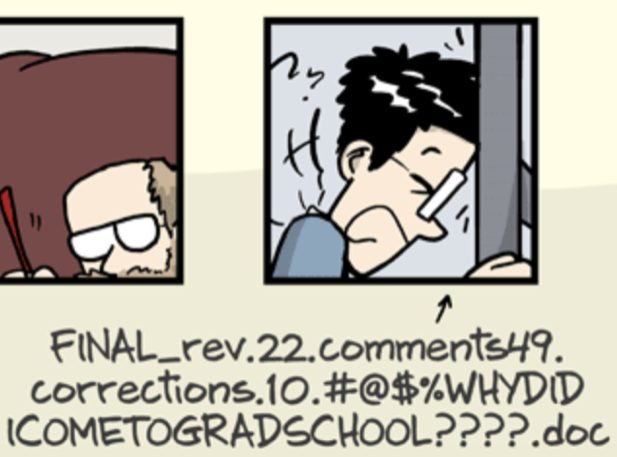
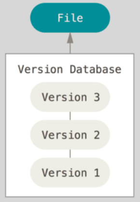

Data management
Local version control workflows

DataLad Datasets
 |
DataLad Datasets
 |
Local version control
Procedurally, version control is easy with DataLad!

Advice:
- Save meaningful units of change
- Attach helpful commit messages
Summary - Local version control
datalad createcreates an empty dataset.- Configurations (-c yoda, -c text2git) are useful.
- A dataset has a history to track files and their modifications.
- Explore it with Git (git log) or external tools (e.g., tig).
datalad saverecords the dataset or file state to the history.- Concise commit messages should summarize the change for future you and others.
datalad statusreports the current state of the dataset.- A clean dataset status is good practice.
Summary - Local version control
Summary - Local version control
Installing Datasets
$ datalad install --dataset . \
--source https://github.com/datalad-datasets/longnow-podcasts.git \
recordings/longnow
- Installs a dataset (here: from Github) (--source/-s) ...
- into the superdataset Datalad-101 (--dataset/-d) under the path recordings/longnow ...
- and registers it as a subdataset.
Installing Datasets

- Datasets are light-weight: Upon installation, only small files and meta data about file availability are retrieved.
- Content can be obtained on demand via
datalad get.
Dataset Nesting

commit 8fdf62acd0bf1e99ebcb6c466edc994a5f4013ba
Author: DataLad Demo demo@datalad.org
Date: Sat Oct 26 15:54:44 2019 +0200
[DATALAD] Recorded changes
diff --git a/.gitmodules b/.gitmodules
new file mode 100644
index 0000000..1b59b8c
--- /dev/null
+++ b/.gitmodules
@@ -0,0 +1,4 @@
+[submodule "recordings/longnow"]
+ path = recordings/longnow
+ url = https://github.com/datalad-datasets/longnow-podcasts.git
+ datalad-id = b3ca2718-8901-11e8-99aa-a0369f7c647e
diff --git a/recordings/longnow b/recordings/longnow
new file mode 160000
index 0000000..dcc34fb
--- /dev/null
+++ b/recordings/longnow
@@ -0,0 +1 @@
+Subproject commit dcc34fbe669b06ced84ced381ba0db21cf5e665f Summary - Dataset consumption & nesting
datalad installinstalls a dataset.- It can be installed “on its own”: Specify the --source/-s of the dataset, and an optional path for it to be installed to.
- Datasets can be installed as subdatasets within an existing dataset.
- The --dataset/-d option needs a path to the root of the superdataset.
- Only small files and metadata about file availability are present locally after an install.
- To retrieve actual file content of larger files,
datalad getdownloads large file content on demand. datalad statuscan report on total and retrieved repository size- using
--annexand--annex alloptions. - Datasets preserve their history.
- The superdataset records only the version state of the subdataset.
Now what I can do with that?
- Local version control
Practice @home
- Start a coding project or take an existing project and version
control your work with DataLad. Remember to create datasets with
the
text2gitoryodaconfiguration!
Further reading
- The basics on datasets:
- - Chapter DataLad Datasets in the handbook.
- How to get help on commands and their options:
- - Section How to get help in the handbook
Backup slides for anticipated questions
How does a here-document work?
$ cat << EOT > notes.txt
One can create a new dataset with 'datalad create [--description] PATH'.
The dataset is created empty
EOT
- Two delimiting identifiers (EOT) wrap any amount of text into a stream
- The
<<characters redirect the stream into standard input for thecatcommand - The
>character redirects the standard output ofcatand writes it into a new filenotes.txt
Why is it used?
- Allows pretty formating (e.g., line breaks)
- Allows writing documents from the terminal
What's with all those configurations?
- Contents of a dataset can be stored in Git or Git-annex.
- Files stored in Git can be more easily modifiable.
- By default, all contents of a dataset are stored in Git-annex.
- Configurations like
text2gitandyodaconfigure the dataset to store files of certain types or in certain locations to be stored in Git - More about this in Under the hood: Git-annex.